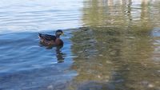
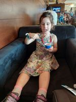
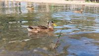

Austria album: the 4 picks build_scene_distance changed
16 of 20 picks identical (minimal pipeline). Scenes 62/83 noise
→ 65/83 noise. red = baseline,
green = fused. Is each green as good or better?

OUT: 20230818_171216→
IN: 20230817_155437OUT: 20230818_171308→
IN: 20230818_171238 OUT: 20230821_115307→IN: 20230822_150836
OUT: 20230822_150903→IN: 20230824_154231